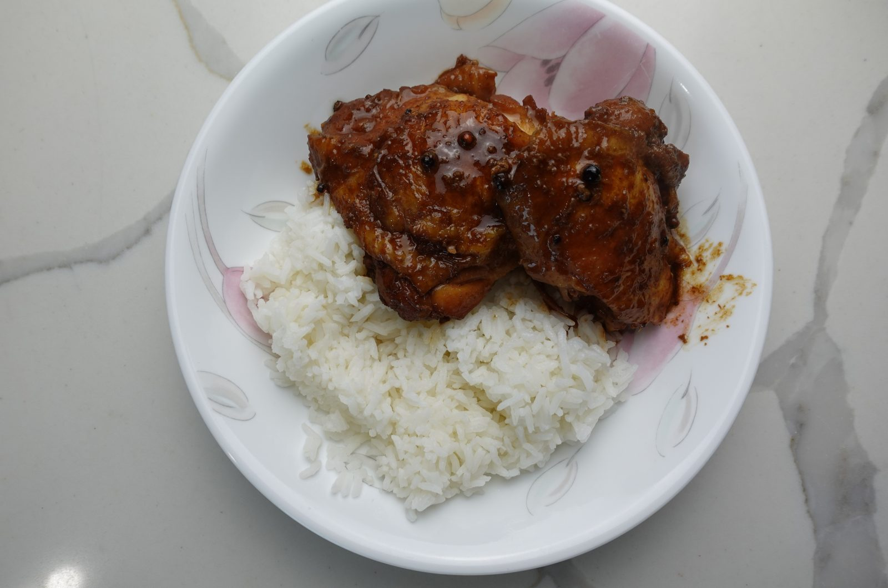

Chicken Adobo

A Filipino classic, chicken adobo is one of the most flavorful chicken dishes ever. And the best part? It’s EXTREMELY easy to make. With just a few cheap ingredients and very little effort, you too can have a delicious and hearty meal ready in minutes. Winner winner chicken dinner.
Ingredients
- 5-6 chicken thighs, bone-in skin on
- ½ cup soy sauce
- 1 tsp sugar
- 4 bay leaves
- 1 tsp black peppercorns
- 7-8 garlic cloves
- ¼ cup vinegar
- 1 cup water
- Add chicken thighs, soy sauce, garlic cloves, bay leaves, black peppercorns, and sugar in a container. Mix together and let marinate for at least 30 minutes.
- In a lightly oiled pan on medium heat, brown the chicken on each side for about 2-3 minutes.
- Add the marinade as well as a cup of water. Bring to a boil, cover and simmer for 30 minutes.
- Remove the lid, add the vinegar and simmer uncovered until the sauce is darker and slightly thickened, about 8-10 minutes.
Back to Main page